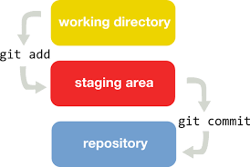
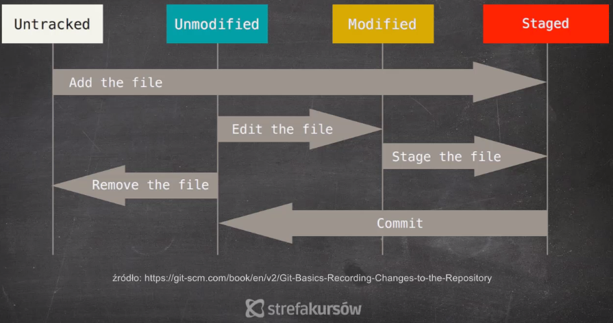
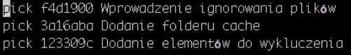
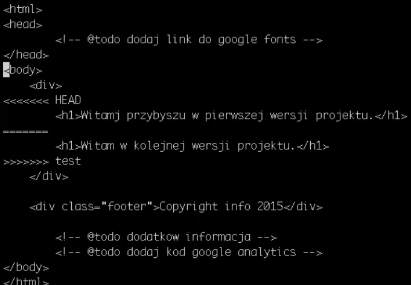
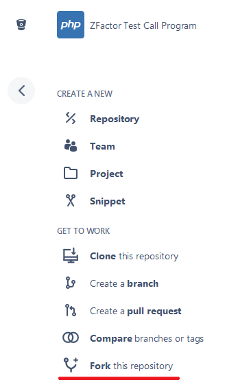
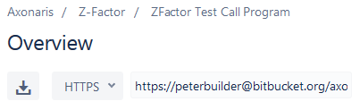

Czy instalacja przebiegła pomyślnie?
Wystarczy otworzyć terminal i wpisać "git"
Jak to działa?
Jak to działa?
Pierwsze repozytorium
- Utworzenie katalogu (mkdir <nazwa katalogu>)
- Przejście do katalogu
- Polecenie: git init
Ustawianie danych konta
- git config --global user.name "<nazwa użytkownika>"
- git config --global user.email "<adres email>"
Przydatne komendy na początek
- Status naszego repozytorium: git status
- Historia projektu: git log
Dodanie plików do poczekalni
- Pojedynczy plik: git add <nazwa pliku>
- Wszystkie pliki: git add .
Usunięcie zmian jeśli plik nie był w poczekalni
git checkout -- <nazwa pliku>
Wycofanie pliku jeśli był w poczekalni
git reset HEAD <nazwa pliku>
Usunięcie zmian pliku w poczekalni
git reset HEAD --hard;
Wycofanie pliku po zrobieniu commitu (zachowuje całą treść)
git rm --cached <nazwa pliku>
Utworzenie commitu
git commit -m <wiadomość>
Zmiana wiadomości w ostatnim commicie
git commit --amend
Ignorowanie plików i katalogów
Utworzenie pliku .gitignore
Wykluczenie pliku
!</nazwa katalogu/nazwa pliku>
Zmiana kolejności commitów
- git rebase -i HEAD~<ilość komitów w tył> 
Scalanie commitów
- git reset HEAD~<ilość komitów w tył>
- git add .
- git commit -m "<wiadomość>"
Rozdzielanie commitów
- git rebase <id commitu>
- Zmiana nazwy commitu z "pick" na "edit"
- git reset HEAD^ (pokazuje niezapisane zmiany)
- git add <nazwa pliku>
- git commit -m "<wiadomość>"
- git rebase --continue>
- git commit --allow-empty (potwierdzić zapisanie)
Dodanie elementu na półkę
- git add .
- git stash save "<powód>"
Przywracanie elementów z półki
- git stash list (pokazuje elementy na półce)
- git stash show (zmiany w plikach na półce)
- git stash apply (pobiera element)
- git stash pop (pobiera i usuwa z półki ostatni element)
Czyszczenie półki
- Git stash drop <id elementu> (domyślnie z indexem 0)
- git stash clear (czyści całą półkę)
Branche - rozgałęzienia

Nowy branch
- git branch <nazwa brancha>
- git checkout <nazwa brancha>
Kopiowanie brancha
git checkout -b <nazwa nowego brancha> <nazwa brancha z którego będzie robiona kopia>
Scalanie brancha
Rozwiązywanie konfliktów
- Mergowanie branchy
- Rozwiązywanie konfliktów
- git commit
Usuwanie brancha
git branch -d <nazwa brancha>
Uruchamianie komend bez konsekwencji --dry-run
Przykład: git add --dry-run cache/
Oznaczanie commitów tagami
- git checkout <numer commitu>
- git tag <wersja>
Szybkie przejście do tagu
git checkout <wersja>
Fork
Klonowanie repozytorium na dysk lokalny
git clone <link do repozytorium>